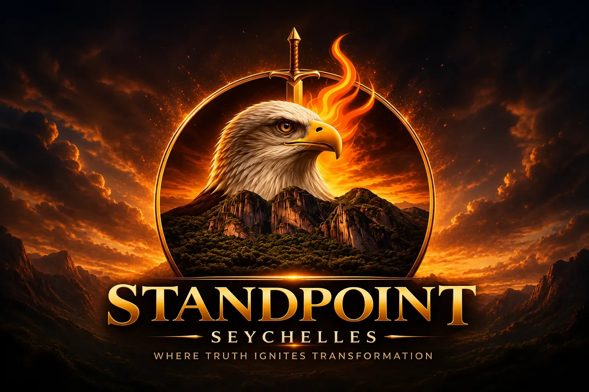

Standpoint Seychelles — Where truth ignites transformation

Every citizen has a voice.
Knowledge gives it strength.
Truth
Accurate, checked against the Constitution and official sources.
Knowledge
Visual explainers that spark real understanding.
Community
For every Seychellois, in every district.
Transformation
Informed citizens build a stronger nation.
Clear, visual and non-partisan explainers on how Seychelles is governed — your rights, your vote, and how the decisions that shape everyday life are made.
What we explain
Civic knowledge, made visual
We turn complex topics into simple graphics and short guides anyone can understand and share.
Seychelles at a glance
Our republic in numbers
1976Independence, 29 June
1993Current Constitution (Third Republic)
115Islands in the archipelago
3National languages: Kreol, English, French
Featured visuals
Start with the big picture
Test what you know
Take our five-question civic quiz and share it with friends and family.